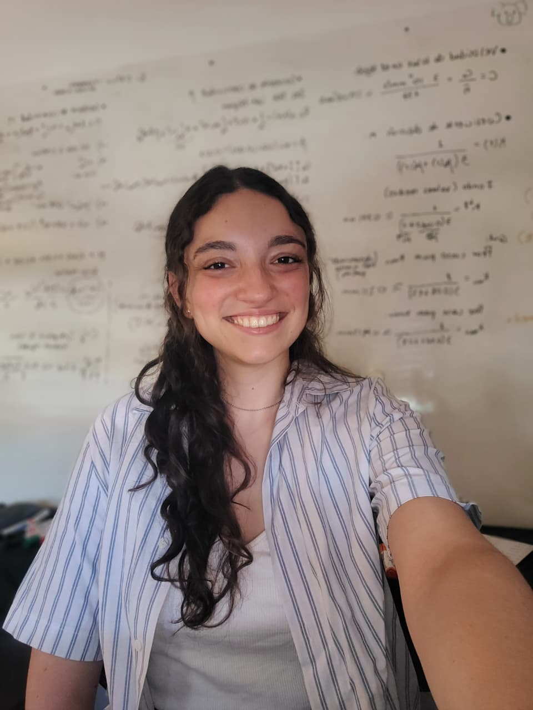

Matemática · UNCPBA · Tandil, Argentina
Problemas inversos, redes neuronales y enseñar matemática.

"Muchas de las cosas que me interesaron desde siempre terminaron encontrándose en la matemática. Por eso la elegí: es una disciplina que atraviesa muchísimos problemas y permite conectar ideas muy distintas."
Soy Julieta, argentina e italiana, y vivo en Tandil. Estoy terminando la Licenciatura en Ciencias Matemáticas en la Universidad Nacional del Centro de la Provincia de Buenos Aires: tengo todos los finales, optativas y créditos aprobados, y defiendo mi tesis a fines de 2026. La escribo en la intersección entre matemática, física y computación: el problema inverso en tomografía óptica difusa, que combina todo lo que más me entusiasma.
Empecé por física, y durante 2020 cursé las dos carreras a la vez. Esa base me dejó algo que no tiene vuelta atrás: la convicción de que las herramientas matemáticas son la mejor lente que tenemos para mirar el mundo real.
Me apasiona usar la matemática para resolver problemas difíciles, en cualquier ámbito. No me interesa la matemática encerrada en sí misma, sino la que dialoga con la física, la computación, la biología, la ingeniería. Esa curiosidad me llevó a proyectos de deep learning con Neuromatch Academy junto a personas de todo el mundo, a trabajar en un proyecto sobre geometría arterial y aterosclerosis en el Instituto PLADEMA, y a obtener una beca Friends of Fulbright que me permitió estudiar en Indiana University Indianapolis en 2023, una experiencia que marcó un antes y un después en mi formación.
Fui ayudante de cátedra durante cinco años en materias de Análisis Matemático, Cálculo y Matemática Computacional. Lo que más disfruto de enseñar es lograr que algo complejo se vuelva claro: trabajo con herramientas visuales, busco la intuición detrás de cada concepto y le doy mucha importancia al trato cercano con mis alumnos. Hoy, mientras termino la tesis, doy clases particulares de matemática universitaria.
Las olimpiadas científicas fueron mi primer contacto serio con la matemática como desafío: participé desde chica en la Olimpiada Matemática Ñandú, la Olimpiada Matemática Argentina y la Olimpiada Argentina de Biología. En 2022 recibí una Mención de Honor en la Competencia Interuniversitaria de Matemática Argentina (CIMA), un reconocimiento que valoro especialmente porque vino del mundo que habito a diario.
Me interesan la física teórica y matemática, la astronomía, la física nuclear, la energía, lo aeroespacial, la genética, el deep learning y los problemas inversos, entre otras cosas. Si algo tiene un desafío científico detrás, probablemente ya estoy pensando en cómo abordarlo.
Reseñas publicadas en Superprof, transcriptas textualmente.
Cinco años, 3045 horas presenciales y 24 materias obligatorias, cada una con sus contenidos oficiales y la bibliografía que se usó.
Materias, cargas horarias y contenidos según la resolución RCA 380/18 del Consejo Académico de la Facultad de Ciencias Exactas de la UNCPBA, que adecúa el Plan de Estudios 2003.
Apuntes, libros y material que escribo para mis alumnos y dejo disponible para quien lo necesite. Se va sumando de a poco.
¿Tenés una pregunta sobre mi investigación, querés colaborar, o simplemente charlar sobre matemática, libros o cerámica? Escribime.